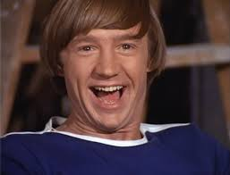

Home
Band
Photo
Sign Up

Band Memebers Name: (Peter Tork, Davy Jones, Micky Dolenz or Michael Nesmith)
{{cust.name}} - {{cust.info}}
The Monkees - First Video
The first of many videos, the first single.